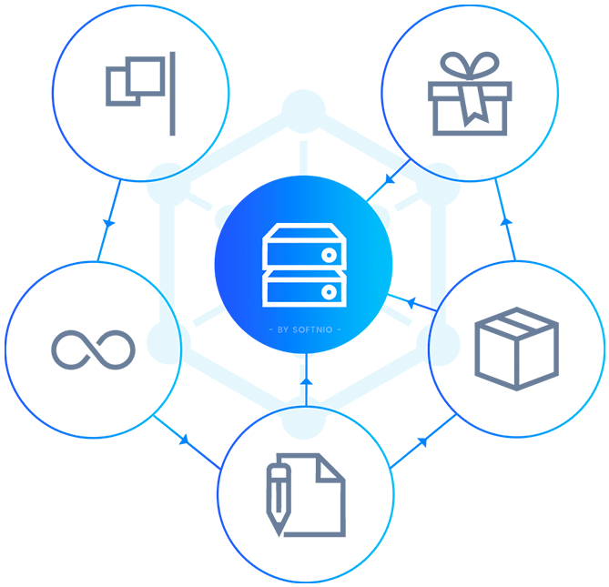
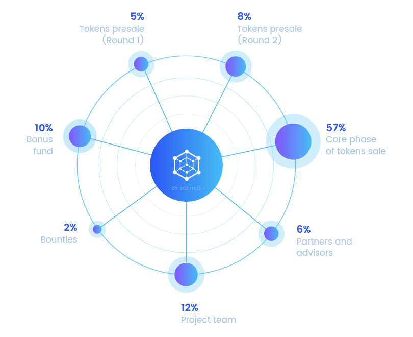

The World's First
Self-Healing AI Network
KNIRV D-TEN transforms AI failures into collective knowledge through seven sovereign layers: KNIRV-ROOT, KNIRV-ROUTER, KNIRVGRAPH, KNIRVCHAIN, KNIRV-NEXUS DVE, KNIRV-SHELL, and KNIRV-WALLET - creating a compounding global intelligence.

What is the KNIRV D-TEN?
The KNIRV Decentralized Trusted Execution Network (D-TEN) is a revolutionary framework that transforms AI failures into collective knowledge, creating a self-healing, continuously evolving intelligence ecosystem.
Through seven sovereign layers working in harmony, the D-TEN enables AI systems to learn from every mistake collectively and autonomously. When an AI fails, that failure becomes a structured ErrorNode within our global knowledge graph, incentivizing solutions that become composable, monetizable Skills.
Powered by the NRN token and secured through cryptographic proofs, the D-TEN creates a permissionless, transparent, and incentivized network where intelligence compounds exponentially through verified, collaborative problem-solving.
The D-TEN Ecosystem
Experience the future of AI through our comprehensive ecosystem of interconnected components, each designed to contribute to the collective intelligence and self-healing capabilities of the KNIRV D-TEN.

The KNIRV D-TEN ecosystem consists of seven sovereign layers, each contributing unique capabilities to create a unified, self-improving AI network that transforms failures into collective knowledge.
- KNIRV-SHELL: Autonomous self-improving AI agents
- KNIRV-WALLET: Seamless user gateway with XION integration
- KNIRVANA: Real-time strategy game interface
- KNIRV-NEXUS DVE: Verifiable execution environments
- Unified API Gateway for seamless integration
Seven Sovereign Layers
The KNIRV D-TEN consists of seven interconnected sovereign layers, each contributing unique capabilities to create a unified, self-improving AI ecosystem.
KNIRV-ROOT
The sovereign GoLang-based blockchain serving as the canonical NRN token ledger and network oracle, orchestrating the entire D-TEN economy.
KNIRV-ROUTER
The network integrity layer producing NRNs via "Proof-of-Connectivity" and embedding URI path certificates for verified network pathways.
KNIRVGRAPH
The GoLang-based Graphchain serving as the decentralized knowledge fabric for ErrorNodes and SkillNodes, chronicling AI learning.
KNIRVCHAIN
The sovereign Rust-based blockchain hosting the canonical CodeT5 Base LLM and authoritative SkillRegistry for the network.
KNIRV-NEXUS DVE
The network of Decentralized Validation Environments providing verifiable execution and cryptographic proofs through CLEAN paradigm.
KNIRV-SHELL
Autonomous, Rust WASM-powered AI agents capable of self-improving through SEAL loop, contributing to collective intelligence.
KNIRV-WALLET
The user-friendly gateway leveraging XION's Meta Accounts for seamless interaction with the entire D-TEN ecosystem.
NRN Economics
The Network Resolution Notice (NRN) token powers the entire KNIRV D-TEN ecosystem through a self-sustaining economic loop that incentivizes collective problem-solving and network growth.
Token Generation
Proof-of-Connectivity by KNIRV-ROUTERs
Token Utility
Skill Invocation & Network Operations
Economic Model
Self-Sustaining Deflationary Loop
Reward Distribution
Solvers, DVE Operators, Observers
Network Access
USDC Faucet via XION Integration
Governance
NRN Staking & Reputation-Based Voting
D-TEN
Architecture

NRN Economic
Flow

Our Roadmap
Q2 2026
Phase 1: Core Mainnet Launch & Interoperability
Q2 2026
Deploy KNIRV-ROOT, KNIRVCHAIN, KNIRVGRAPH
Q2 2026
Launch KNIRV-WALLET & KNIRV SDK
Q4 2026
Phase 2: Enhanced Intelligence & Agent Capabilities
Q4 2026
Advanced KNIRV-NEXUS DVE specialization
Q4 2026
Skill licensing & automated royalty payments
Q2 2027
Phase 3: Experiential Integration & Advanced Learning
Q2 2027
Full KNIRVANA integration & launch
Q2 2027
Formal verification & Zero-Knowledge Proofs
2028+
Phase 4: Cross-Ecosystem Expansion
2028+
Autonomous Governance & Universal AI Layer
Powered by Visionaries
Our team combines deep expertise in blockchain technology, artificial intelligence, and decentralized systems to build the future of self-improving AI networks.
Guillermo Perry
Chief Solutions Architect
A seasoned software architect with over twenty years of experience in the industry. His passion for technology is matched only by his commitment to excellence.
Guillermo leads the architectural vision for the KNIRV D-TEN ecosystem, ensuring scalable and robust solutions across all seven sovereign layers.
Herman Duquerronette
Sr. Software Developer
A seasoned software developer with over two decades of experience in the industry. His passion for technology is matched only by his commitment to excellence.
Herman brings deep technical expertise to the KNIRV ecosystem, focusing on robust software development practices and system reliability across the D-TEN infrastructure.

Kareem Bullard
Project Manager
Orchestrating Success with Strategic Leadership. With a proven track record in delivering high-impact projects on time and within budget, I bring a unique blend of tactical foresight and operational expertise.
Kareem ensures seamless coordination across all KNIRV D-TEN development initiatives, managing complex project timelines and stakeholder relationships to drive successful outcomes.
Albert Mcclendon
Product R&D Specialist
A seasoned product manager with over 5 years of experience in the industry. His passion for technology is matched only by his commitment to excellence.
Albert drives product innovation and research initiatives within the KNIRV ecosystem, ensuring that development efforts align with market needs and technological advancement opportunities.
D-TEN Ecosystem Partners


As seen in


KNIRV D-TEN News

Introducing the KNIRV D-TEN
The world's first Decentralized Trusted Execution Network transforms AI failures into collective knowledge...
NRN Economics: Self-Sustaining AI Economy
How the Network Resolution Notice token creates a deflationary economic loop that incentivizes collective AI learning...

KNIRV-SHELL: Autonomous Self-Improving AI
Discover how KNIRV-SHELL agents continuously learn and adapt through the SEAL loop, contributing to collective intelligence...
Frequently Asked Questions
Below we've provided answers about the KNIRV D-TEN, NRN token, AI agents, and the ecosystem. If you have any other questions, please get in touch using the contact form below.
What is KNIRV D-TEN?
KNIRV D-TEN is the world's first Decentralized Trusted Execution Network that transforms AI failures into collective knowledge through seven sovereign layers, creating a self-healing, continuously evolving intelligence ecosystem.
How do I access NRN tokens?
You can acquire NRN tokens through the USDC Faucet via XION integration using your KNIRV-WALLET. NRN tokens are also earned by participating as a Solver, DVE operator, or Observer in the network.
How can I participate in the KNIRV D-TEN network?
You can join the D-TEN network as a Solver, DVE operator, or Observer. Access NRN tokens through the USDC Faucet via XION integration, and start contributing to the collective AI intelligence.
How do I benefit from NRN tokens?
NRN tokens enable you to invoke Skills, participate in network governance, earn rewards for solving problems, and access premium features across the KNIRV D-TEN ecosystem.
What makes the D-TEN self-healing?
The D-TEN transforms AI failures into structured ErrorNodes within KNIRVGRAPH, incentivizing solutions that become composable Skills. This creates a continuous learning loop where every failure strengthens the network.
How do KNIRV-SHELL agents learn and improve?
KNIRV-SHELL agents use the SEAL loop (Sense, Evaluate, Act, Learn) to continuously improve. They access the collective knowledge in KNIRVGRAPH and contribute their learnings back to the network.
What are the seven sovereign layers?
The seven layers are: KNIRV-ROOT (NRN Oracle), KNIRV-ROUTER (Network Integrity), KNIRVGRAPH (Knowledge Fabric), KNIRVCHAIN (Base LLM), KNIRV-NEXUS DVE (Execution), KNIRV-SHELL (AI Agents), and KNIRV-WALLET (User Gateway).
How does the NRN economic model work?
NRN tokens are generated through Proof-of-Connectivity by KNIRV-ROUTERs. They're used for Skill invocation, creating a deflationary loop where network usage burns tokens while problem-solving generates new ones.
What is KNIRV-NEXUS DVE?
KNIRV-NEXUS DVE provides Decentralized Validation Environments for verifiable execution. It ensures cryptographic proofs of computation through the CLEAN paradigm, enabling trusted AI operations.
How does KNIRVGRAPH store knowledge?
KNIRVGRAPH uses a GoLang-based Graphchain to store ErrorNodes and SkillNodes, creating a decentralized knowledge fabric that chronicles AI learning and enables skill composition.
What is the role of KNIRVCHAIN?
KNIRVCHAIN is the Rust-based sovereign blockchain hosting the canonical CodeT5 Base LLM and the authoritative SkillRegistry, serving as the foundation for AI model evolution.
How does KNIRV-WALLET simplify access?
KNIRV-WALLET leverages XION's Meta Accounts for seamless, user-friendly interaction with the entire D-TEN ecosystem, eliminating complex blockchain interactions for end users.
What is Proof-of-Connectivity?
Proof-of-Connectivity is KNIRV-ROUTER's consensus mechanism that generates NRN tokens by verifying network pathways and embedding URI path certificates for trusted connections.
How do Skills become monetizable?
When Solvers create successful solutions to ErrorNodes, they become composable Skills in the registry. Other agents pay NRN tokens to invoke these Skills, creating revenue for the original Solver.
What is the CLEAN paradigm?
CLEAN (Cryptographic Ledger for Execution, Attestation, and Notarization) ensures verifiable computation in KNIRV-NEXUS DVE environments through cryptographic proofs and attestations.
How does KNIRVANA enhance the experience?
KNIRVANA provides a real-time strategy game interface that makes interacting with the D-TEN ecosystem engaging and intuitive, gamifying AI collaboration and learning.
What are the technical requirements?
The D-TEN supports multiple programming languages and frameworks. KNIRV-SHELL agents run on Rust WASM, while the ecosystem provides APIs for seamless integration with existing systems.
How is data privacy maintained?
The D-TEN uses cryptographic proofs and zero-knowledge techniques to ensure privacy. Only necessary information is shared while maintaining the integrity of the collective learning process.
What is the development roadmap?
The roadmap spans four phases from Q2 2026 to 2028+, progressing from core mainnet launch through enhanced intelligence, experiential integration, to cross-ecosystem expansion.
How can developers get started?
Developers can access the KNIRV SDK, documentation, and development tools through our GitHub repositories. Start by creating KNIRV-SHELL agents or integrating with existing D-TEN APIs.
Contact KNIRV D-TEN
Ready to join the future of AI? Reach out to us and we’ll get back to you shortly.
-
+44 0123 4567
-
info@knirv.com
-
Join us on Telegram